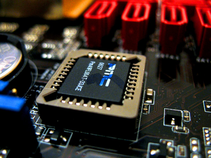

AGP Slots <<
Previous Next >> Video Displays and Video Cards
Processors
The central processing unit is also known as a CPU or processor. Processors come in two main architectures: 32-bit and 64-bit. We denote 32-bit processors (or applications designed for these processors) as x86. The 64-bit processors and applications are denoted as x64. You can purchase a CPU from either Intel or AMD and it could be x86 or x64, as both companies make both types. The x64 processors allow for larger file sizes, more memory, and complicated programs to run faster and more efficiently. There are three things that differentiate CPU types: 1) socket type (which CPU will fit in which socket); 2) single or multicore design; and 3) the size of its cache. While Intel and AMD are fully compatible in terms of running the Windows operating system, you must actually get the correct software for your type of CPU if you are running UNIX/Linux.
中央處理單元也稱為CPU或處理器。處理器採用兩種主要架構：32位和64位。我們將32位處理器（或為這些處理器設計的應用程序）表示為x86。 64位處理器和應用程序表示為x64。您可以從Intel或AMD購買CPU，並且可能是x86或x64，因為兩家公司都生產這兩種類型。 x64處理器允許更大的文件大小，更多的內存以及復雜的程序，以更快，更高效地運行。可以區分CPU類型的三件事：1）套接字類型（哪個CPU將適合哪個套接字）； 2）單核或多核設計； 3）緩存的大小。儘管Intel和AMD在運行Windows操作系統方面是完全兼容的，但是如果您正在運行UNIX / Linux，則實際上必須為您的CPU類型獲得正確的軟件。

Modern processor installed on motherboard. Copyright: cookelma/123 RF Stock Photo.
Intel has been making processors for a long time and their contemporary processors all use the land grid array (LGA) socket style. LGA uses spring-loaded “lands” that connect with the bottom of the processor and a hinged clamp mechanism to hold the processor onto the motherboard. The heat sink is then snapped into the mounting holes at the four corners of the processor socket.
英特爾長期以來一直在生產處理器，其現代處理器均使用陸地柵格陣列（LGA）插槽樣式。 LGA使用彈簧加載的“平台”，該平台與處理器的底部連接，並通過鉸鍊式夾緊機構將處理器固定在主板上。然後將散熱器卡入處理器插槽四個角上的安裝孔。

LGA775 socket, prior to CPU installation. Photo used under CC-BY-NC license from Edward Cai.
Intel processors are broken into families of processors, such as the LGA 775, which contains the Pentium 4, Pentium D, Celeron, Core 2 Duo, Core 2 Quad, and Core 2 Extreme. You should be familiar with the names of the various Intel families, such as Pentium, Celeron, Core, and Sandy Bridge. If you are asked if a certain processor is Intel or AMD, you need to be able to make this determination by the name of the processor alone. All the Intel processors you are asked about in the A+ exam have something in common: two repeated digits. If you see a family name such as LGA 1156, you know it is Intel because the number “1” is repeated in the array number. LGA 1366 has a double “6.” This holds true for all the processors asked about in the A+ exam.
英特爾處理器分為多個處理器家族，例如LGA 775，其中包含奔騰4，奔騰D，賽揚，Core 2 Duo，Core 2 Quad和Core 2 Extreme。您應該熟悉各種Intel系列的名稱，例如Pentium，Celeron，Core和Sandy Bridge。如果詢問您某個處理器是Intel還是AMD，則需要能夠僅通過處理器的名稱來做出此確定。您在A +考試中被詢問的所有英特爾處理器都具有一些共同點：兩個重複的數字。如果看到諸如LGA 1156之類的家族名稱，您就知道它是Intel，因為陣列編號中重複了數字“ 1”。 LGA 1366具有雙“ 6”。對於A +考試中要求的所有處理器，這都是正確的。
Common Intel land grid arrays:
- LGA 775 – Pentium 4, Pentium D, Celeron, Core 2 Duo, Core 2 Quad, Core 2 Extreme
- LGA 1366 – Core i7 9xx, Xeon series
- LGA 1156 – Core i3, Core i5, Core i7 (not 9xx)
- LGA 1155 – Sandy Bridge Core i3, Core i5, Core i7 (second-generation)

Intel Celeron processor. Photo used under CC-BY-NC license from Friedemann W . W.
AMD usually uses letters in their naming convention, except for the 940 series. Note “940” does not have double repeating digits. Therefore, you can tell it is not an Intel processor and, instead, it is an AMD processor. All the other families you need to know for the exam are listed with letters: AM2, AM2+, AM3, AM3+, and FM1. AMD also uses a different socket style called the pin grid array (PGA). The pins on the back of the CPU connect to the processor socket with a zero insertion force (ZIF) mechanism. The heat sink clips onto mounting lugs on two sides of the processor instead of the four corners used by Intel. All AMD sockets are PGA, except the “F” family.
除940系列外，AMD通常在其命名約定中使用字母。注意“ 940”沒有重複的兩位數。因此，您可以說它不是Intel處理器，而是AMD處理器。您需要通過考試知道的所有其他其他家庭都列出了以下字母：AM2，AM2 +，AM3，AM3 +和FM1。 AMD還使用了另一種插槽樣式，稱為引腳網格陣列（PGA）。 CPU背面的引腳通過零插入力（ZIF）機制連接到處理器插槽。散熱器夾在處理器兩側的安裝凸耳上，而不是英特爾使用的四個角。除“ F”系列外，所有AMD插槽均為PGA。

AMD processors. Photo used under CC-BY-NC-ND license from Chris Pirillo.
Overclocking
Overclocking is the process of running a processor, component, or bus at speeds higher than normal design specifications allow. This can be configured in the BIOS of the machine, if supported. This is a very dangerous practice, since it leads to system instability that causes crashes and higher error rates. Additionally, overclocking components makes them run hotter, which can damage them and shorten their lifespan. More power is consumed in overclocking, which creates more heat, and requires more cooling. It is not recommended to overclock your machine for most users, and should never be used in production (work) machines. Overclocking is highly popular in the gaming community, and requires specialized cooling systems to be in place, such as liquid cooling.
超頻是指以高於正常設計規格允許的速度運行處理器，組件或總線的過程。如果支持，可以在計算機的BIOS中進行配置。這是非常危險的做法，因為它會導致系統不穩定，從而導致崩潰和更高的錯誤率。此外，超頻組件會使它們運行溫度更高，這可能會損壞它們並縮短其使用壽命。超頻會消耗更多的功率，從而產生更多的熱量並需要更多的散熱。不建議大多數用戶對計算機進行超頻，並且切勿在生產（工作）計算機上使用該計算機。超頻在遊戲界非常流行，並且需要使用專門的冷卻系統，例如液體冷卻。
Choosing a Processor
So which socket and processor is better: Intel or AMD? It depends on the user. For most users, they are fairly equivalent. But high-end gamers who like to overclock their machines tend to select AMD because it allows for more overclocking than the Intel systems.
那麼哪個插座和處理器更好：Intel還是AMD？這取決於用戶。對於大多數用戶來說，它們是相當等效的。但是喜歡對自己的計算機進行超頻的高端遊戲玩家傾向於選擇AMD，因為它比Intel系統支持更多的超頻。
CPU Cache
The CPU is more than just the processor — it also contains cache memory. This is a very small amount of memory that provides the fastest memory available to the CPU. Most CPUs have a level 1 and level 2 cache, but some even have a level 3 cache. Because the processor operates so quickly, we want the most-frequently-used information to end up in the cache to speed up the processing. When the processor needs information, it first checks the location “closest” to it (level 1 cache). If the information is not in the level 1 cache, the CPU then checks level 2, then level 3. If the information is not in either of those cache levels, the CPU then reaches out to the system RAM (the next fastest location), and if the information is not there, the CPU then looks to the hard disk drive (the slowest location). By continually trying to find the information closer and more quickly, the processor operations are sped up.
CPU不僅僅是處理器-它還包含高速緩存。這是非常少量的內存，可為CPU提供最快的內存。大多數CPU具有1級和2級緩存，但有些甚至具有3級緩存。由於處理器的運行速度如此之快，我們希望將最常用的信息存儲在緩存中以加快處理速度。當處理器需要信息時，它首先檢查“最近”的位置（1級緩存）。如果信息不在1級緩存中，則CPU將檢查2級，然後是3級。如果信息不在這兩個緩存級中的任何一個中，則CPU會到達系統RAM（下一個最快的位置），如果信息不存在，則CPU將查找硬盤驅動器（最慢的位置）。通過不斷嘗試更快更近地查找信息，可以加快處理器的運行速度。
System performance is improved through the use of cache memory, by enabling the processor to use recent memory locations (cache) rather than retrieving information from main memory.
通過使能處理器使用最近的內存位置（緩存），而不是從主內存中檢索信息，可以通過使用緩存來提高系統性能。
The bottom line when it comes to cache and performance — larger cache results in faster CPU performance.
最重要的是緩存和性能-更大的緩存可提高CPU性能。
AGP Slots <<
Previous Next >> Video Displays and Video Cards